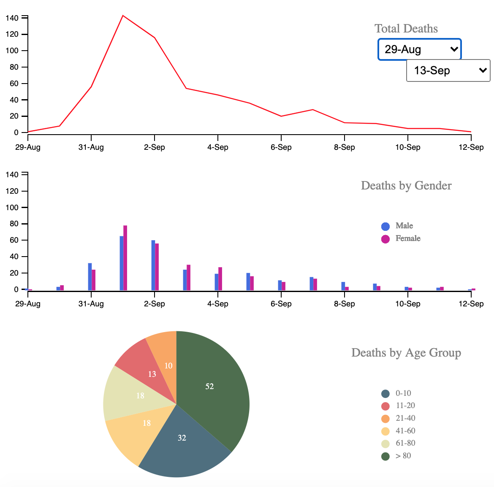

This is the original map by John Snow showing the clusters of cholera cases (indicated by stacked rectangles) in the London epidemic of 1854. The contaminated pump is located at the intersection of Broad Street and Cambridge Street (now Lexington Street), running into Little Windmill Street. (via Wikipedia)
I am in my last semester doing the Master of Science in Applied Data Science with a specialization in Sports Analytics at IUPUI. I am currently enrolled in Dr. Khairi Reda's INFO-H517: "Visualization Design, Analysis, & Evaluation" in the fall semester of 2020. This is project 1 of the class to reproduce Dr. John Snow's cholera outbreak map as an interactive visualization using JavaScript and the D3 data visualization library.
Dr. Reda provided the data sets that included:
- streets.json - gives the coordinates of the streets as a series of line segments
- pumps.csv - gives the locations of the 13 nearby pumps
- deathdays.csv - gives the number of deaths for each day of the outbreak
- deaths_age_sex.csv - gives the location of each death in the deathdays file, in order, plus information on the age and sex of the victim
This class was the first time I have ever used D3. I have always used Tableau in the past, but I now know how powerful D3 is for visualizations. I have listed some challenges I overcame for this project:
- I had approximately one month to complete this project.
- I was teaching myself D3, CSS, and Javascript along the way of doing this project.
- I had a hard time picturing how I wanted to do this project. I tried multiple ways to achieve the final visualizations, but I was happy with the final outcome.

The first step for the design process was to picture the visuals on paper. I came up with a couple of ideas to show both graphs at once. The first graph represents the map to show the deaths, street placement, building labels, and pumps. I created the location of each click for a starting estimate of the label placement. The second graphs show a line chart, bar chart, and pie chart for total deaths by gender and age. The x-axis shows the dates, while the y-axis shows the number of deaths. The X scale of the graph was initially separate from an X range band scale to draw the dark gray hover bars. I used the same X scale to place the hover bars, which was better than keeping parallel scales in synch.
Dr. Reda provided documentation and deliverables for how the project would be graded. I added both graphs and highlighted the features one by one according to the requirements that were listed. I asked my co-workers to test out the visualization as well as how the colors appeal to them. My co-workers interacted with the web pages and the graphs provided. I received feedback, which gave me an idea for a consistent style. One feedback I recieved was on the male/female bar chart. The pumps are colored blue (to represent water) and the male point is blue.
After receiving feedback, I decided to make a CSS file for the project. The CSS consisted of the page title, page subtitle, page text, and page buttons. This CSS kept my project consistent with text formatting. The page title has a color of RGB(157, 34, 53), which is the official color of IU Crimson. The page title text is formatted to Arial serif, 30 point size, and bold. The page subtitle text is black, Arial serif, 20 point size, and bold. The page text is black, Arial serif, and 12 point size. Finally, the page buttons are IU Crimson, white text, 17 point size font, and slightly other features. I used the Indiana University crimson color to post all of my graduate school work on my website, www.NikhilMorar.com so that the color schemes will be the same across all projects.
I experimented with different color schemes but came up with the solution to stay consistent throughout the project. I used blue to show males, magenta to show females, and six red scales to show age categories. From lighter to darker red to show younger age compared to an older age. All of these choices were made after various attempts of using different color schemes. The visualizations was good with the color blindness simulation tool.

For the first graph that shows the map, the deaths' locations are strongly correlated with the Broad Street pump location. The other demographics given were gender and age of each death. From the second graph for gender, I see no difference in the rate of deaths between female and male victims. As shown on the right, I noticed a high death rate in different age groups. I have highlighted the two age groups that show a young age from 0-10 and the old age of 80 and greater. These age groups are the lowest and highest groups provided. When digging into the data provided, only 1% of the population falls into the 80 and older age groups compared to 28% for the 0-10 age group. At the peak of the outbreak (September 1st), over a third of the fatalities were from this age range. This would imply a much higher mortality rate than the 0-10 age range. As there are many more deaths in the 80 and greater age group, the cholera outbreak took older people's lives compared to the youngest age group. I am very interested in how the actual gender and age of the deaths compared to the data provided for the project.
“1854 Broad Street Cholera Outbreak.” Wikipedia, Wikimedia Foundation, 24 Sept. 2020, en.wikipedia.org/wiki/1854_Broad_Street_cholera_outbreak.
Khairi Reda. “Project 1: H517 Visualization Design, Analysis, and Evaluation.”, khreda.com/teaching/2020/H517/project1/.
{kind=link}